Learn Through AR
Home
About
Lathe Machine
Show AR
INTRODUCTION
Lathe is one of the most versatile and widely used machine tools all over the world. It is commonly known as the mother of all other machine tool. The main function of a lathe is to remove metal from a job to give it the required shape and size. The job is securely and rigidly held in the chuck or in between centers on the lathe machine and then turn it against a single point cutting tool which will remove metal from the job in the form of chips.
TYPES OF LATHE
Lathes are manufactured in a variety of types and sizes, from very small bench lathes used for precision work to huge lathes used for turning large steel shafts. But the principle ofoperation and function of all types of lathes are same. The different types of lathes are:
1. Speed lathe
2. Centre or Engine lathe
3. Bench lathe
4. Tool Room Lathe
5. Capstan and Turret lathe
6. Special purpose lathe
7. Automatic lathe
Speed Lathe
Speed lathe is simplest of all types of lathes in construction and operation. It consists of a Bed, Headstock, Tailstock and Tool post mounted on an adjustable slide. There is no feed box, leadscrew or conventional type of carriage. The tool is mounted on the adjustable slide and is fed into the work by hand control. The speed lathe finds applications where cutting force is least such as in wood working, spinning, centering, polishing, winding etc.
Centre or Engine Lathe
The term “engine” is associated with this lathe due to the fact that in the very early days of its development it was driven by steam engine. This lathe is the important member of the lathe family and is the most widely used. Similar to the speed lathe, the engine lathe has all the basic parts, e.g., bed, headstock, and tailstock. An engine lathe is shown in Fig. 4. Unlike the speed lathe, the engine lathe can feed the cutting tool both in cross and longitudinal direction with reference to the lathe axis with the help of a carriage, feed rod and lead screw. The power may be transmitted by means of belt, electric motor or through gears.
Bench Lathe
This is a small lathe usually mounted on a bench. It has practically all the parts of an engine lathe or speed lathe and it performs almost all the operations. This is used for small and precision work.
Room Lathe
This lathe has features similar to an engine lathe but it is much more accurately built. It has a wide range of spindle speeds ranging from a very low to a quite high speed up to 2500 rpm. This lathe is mainly used for precision work on tools, dies, gauges and in machining work where accuracy is needed.
Capstan and Turret Lathe
The distinguishing feature of this type of lathe is that the tailstock of an engine lathe is replaced by a hexagonal turret, on the face of which multiple tools may be fitted and fed into the work in proper sequence. Due to this arrangement, several different types of operations can be done on a job without re-setting of work or tools, and a number of identical parts can be produced in the minimum time.
Special Purpose Lathes
These lathes are constructed for special purposes and for jobs, which cannot be accommodated or conveniently machined on a standard lathe. The wheel lathe is made for finishing the journals and turning the tread on railroad car and locomotive wheels. The gap bed lathe, in which a section of the bed adjacent to the headstock is removable, is used to swing extra-largediameter pieces.
Automatic Lathes
These lathes are so designed that all the working and job handling movements of the complete manufacturing process for a job are done automatically. These are high speed, heavy duty, mass production lathes with complete automatic control.
PRINCIPLE FUNCTIONS OF LATHE PARTS
A simple lathe comprises of a bed made of grey cast iron on which headstock, tailstock, carriage and other components of lathe are mounted. Figure l shows the different parts of engine lathe or central lathe.
The major parts of lathe machine are given as under:
1. Speed lathe
2. Centre or Engine lathe
3. Bench lathe
4. Tool Room Lathe
5. Capstan and Turret lathe
6. Special purpose lathe
7. Automatic lathe
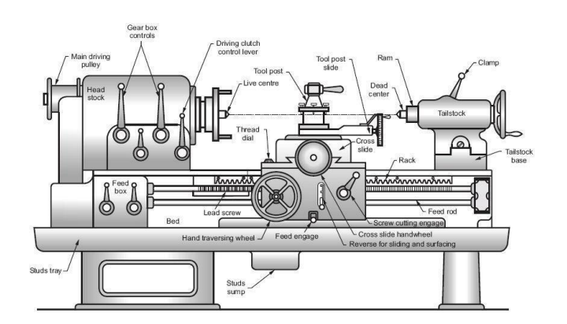
Figure 1: Different parts of engine lathe or central lathe
Bed
The bed of a lathe machine isthe base on which all other parts of lathe are mounted. It is massive and rigid single piece casting made to support other active parts of lathe. On left end of the bed, headstock of lathe machine is located while on right side tailstock is located. The carriage of the machine rests over the bed and slides on it. On the top of the bed there are two sets of guideways - innerways and outerways. The innerways provide sliding surfaces for the tailstock and the outerways for the carriage. The guideways of the lathe bed may be flat and inverted V shape. Generally cast iron alloyed with nickel and chromium material is used for manufacturing of the lathe bed.
Head Stock
The main function of headstock is to transmit power to the different parts of a lathe. It comprises of the headstock casting to accommodate all the parts within it including gear train arrangement. The main spindle is adjusted in it, which possesses live centre to which the work can be attached. It supports the work and revolves with the work, fitted into the main spindle of the headstock. The cone pulley is also attached with this arrangement, which is used to get various spindle speed through electric motor. The back gear arrangement is used for obtaining a wide range of slower speeds. Some gears called change wheels are used to produce different velocity ratio required for thread cutting.
Tail Stock
Figure 2 shows the tail stock of central lathe, which is commonly used for the objective of primarily giving an outer bearing and support the circular job being turned on centers. Tail stock can be easily set or adjusted for alignment or non-alignment with respect to the spindle Workshop and Machine shop practice centre and carries a centre called dead centre for supporting one end of the work. Both live and dead centers have 60° conical pointsto fit centre holes in the circular job, the other end tapering to allow for good fitting into the spindles. The dead centre can be mounted in ball bearing so that it rotates with the job avoiding friction of the job with dead centre as it important to hold heavy jobs.
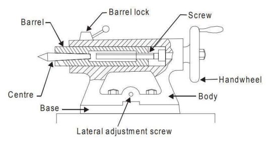
Figure 2: Tailed stock of central lathe
Carriage
Carriage is mounted on the outer guide ways of lathe bed and it can move in a direction parallel to the spindle axis. It comprises of important parts such as apron, cross-slide, saddle, compound rest, and tool post. The lower part of the carriage is termed the apron in which there are gears to constitute apron mechanism for adjusting the direction of the feed using clutch mechanism and the split half nut for automatic feed. The cross-slide is basically mounted on the carriage, which generally travels at right angles to the spindle axis. On the cross-slide, a saddle is mounted in which the compound rest is adjusted which can rotate and fix to any desired angle. The compound rest slide is actuated by a screw, which rotates in a nut fixed to the saddle. The tool post is an important part of carriage, which fits in a tee-slot in the compound rest and holds the tool holder in place by the tool post screw.
Feed Mechanism
Feed mechanism is the combination of different units through which motion of headstock spindle is transmitted to the carriage of lathe machine. Following units play role in feed mechanism of a lathe machine.
1. End of bed gearing
2. Feed gear box
3. Lead screw and feed rod
4. Apron mechanism
The gearing at the end of bed transmits the rotary motion of headstock spindle to the feed gear box. Through the feed gear box the motion is further transmitted either to the feed shaft or leadscrew, depending on whether the lathe machine is being used for plain turning or screw cutting.
The feed gear box contains a number of different sizes of gears. The feed gear box provides a means to alter the rate of feed, and the ration between revolutions of the headstock spindle and the movement of carriage for thread cutting by changing the speed of rotation of the feed rod or lead screw.
The apron is fitted to the saddle. It contains gears and clutches to transmit motion from the feed rod to the carriage, and the half nut which engages with the lead screw during cutting threads.
WORK HOLDING DEVICES:
1. Work is held between the centres
--> Live centre - head stock spindle and Dead centre - tail stock spindle.
--> Driven by catch plate and carrier
2. Work piece held in chuck
--> Four jaw independent chuck
--> Three jaw universal self centering chuck
--> Magnetic chuck
--> Collet chuck
--> Drill chuck
3. Work held in face plate.
4. Work held in mandrel
--> Plain Mandrel
--> Step mandrel
--> Collar Mandrel
-->Screwed Mandrel
--> Cope Mandrel
--> Gang Mandrel
--> Expansion Mandrel
5. Work held in turning fixture
--> Steady Rest
--> Follower Rest
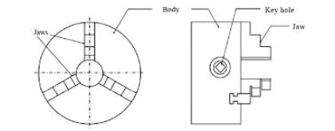
Figure 3: Three Jaw Universal Self Centering Chunk
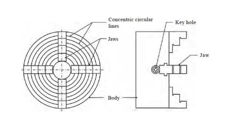
Figure 4: Four Jaw Independent Chunk
LATHE OPERATIONS:
1. Straight Turning Or Plain Turning
2. Facing
3. Shoulder turning
4. Chamfering
5. Knurling
6. Forming
7. Parting off (grooving)
8. Spinning
9. Eccentric turning
10. Drilling
11. Boring
12. Centering
13. Thread cutting
14. Taper turning
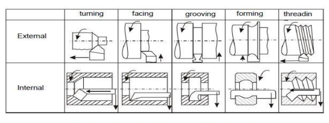
Some common machining operations done in center lathers.
For performing the various machining operations in a lathe, the job is being supported and driven by anyone of the following methods.
1. Job is held and driven by chuck with the other end supported on the tail stock centre.
2. Job is held between centers and driven by carriers and catch plates.
3. Job is held on a mandrel, which is supported between centers and driven by carriers and catch plates.
4. Job is held and driven by a chuck or a faceplate or an angle plate.
The above methods for holding the job can be classified under two headings namely job held between centers and job held by a chuck or any other fixture. The various important lathe operations are depicted through figure 4.
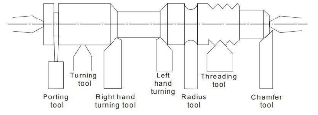
Figure 5: Various lathe operations
Taper Turning
A taper is defined as a uniform increase or decrease in diameter of a piece of work measured along its length. In a lathe machine, taper turning meansto produce a conical surface by gradual reduction in diameter from a cylindrical job. The taper angle (α) for conical surface is given by:
Where,
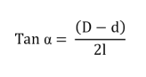
D
: diameter of the large end,
d
: the dia of the small end of the cylindrical job,
l
: the length of the taper of cylindrical job.
A taper is generally turned in a lathe by feeding the tool at an angle to the axis of rotation of the workpiece. The angle formed by the path of the tool with the axis of the workpiece should correspond to the half taper angle. A taper can be turned by anyone of the following methods:
1. By swiveling the compound rest,
2. By setting over the tailstock centre,
3. By a broad nose form tool,
4. By a taper turning attachment,
5. By combining longitudinal and cross feed in a special lathe and
6. By using numerical control lathe
Taper Turning by Swivelling the Compound Rest
This method uses the principle of turning taper by rotating the workpiece on the lathe axis and feeding the tool at an angle to the axis of rotation of the workpiece. The tool is mounted on the compound rest which is attached to a circular base, graduated in degrees.
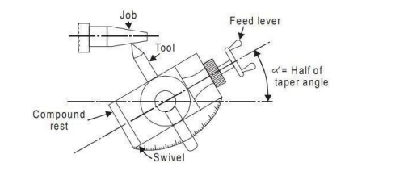
Figure 6: Taper turning by swiveling compund rest
The compound rest can easily be swiveled or rotated and clamped at any desired angle as shown in Fig. 4. Once the compound rest is set at the desired half taper angle, rotation of the compound slide screw will cause the tool to be fed at that angle and generate a corresponding taper. This method is limited to turn a short but steep taper because of the limited movement of the cross-slide. The positioning or setting of the compound rest is accomplished by swiveling the rest at the half taper angle, if this is already known. If the diameter of the small and large end and length of taper are known, the half taper angle can be calculated.
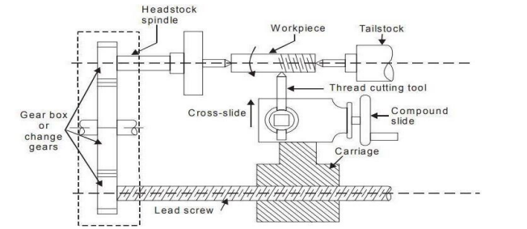
Figure 7: Thread Cutting
Figure 5 shows the setup of thread cutting on a lathe. Thread of any pitch, shape and size can be cut on a lathe using single point cutting tool. Thread cutting is operation of producing a helical groove on spindle shape such as V, square or power threads on a cylindrical surface. The job is held in between centres or in a chuck and the cutting tool is held on tool post. The cutting tool must travel a distance equal to the pitch (in mm) as the work piece completes a revolution. The definite relative rotary and linear motion between job and cutting tool is achieved by locking or engaging a carriage motion with lead screw and nut mechanism and fixing a gear ratio between head stock spindle and lead screw. To make or cut threads, the cutting tool is brought to the start of job and a small depth of cut is given to cutting tool using cross slide. The equation for thread cutting calculation is given by;
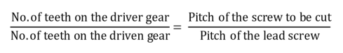
DRILLING ON A LATHE
For producing holes in jobs on lathe, the job is held in a chuck or on a face plate. The drill is held in the position of tailstock and which is brought nearer the job by moving the tailstock along the guide ways, the thus drill is fed against the rotating job.
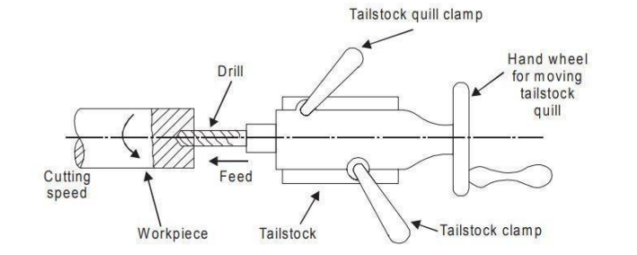
Figure 8: Drilling on lathe
CUTTING PARAMETERS
1. Cutting speed
Cutting speed for lathe work may be defined as the rate in meters per minute at which the surface of the job moves past the cutting tool. Machining at a correct cutting speed is highly important for good tool life and efficient cutting. Too slow cutting speeds reduce productivity and increase manufacturing costs whereas too high cutting speeds result in overheating of the tool and premature failure of the cutting edge of the tool.
The following factors affect the cutting speed:
i. Kind of material being cut
ii. Cutting tool material
iii. Shape of cutting tool
iv. Rigidity of machine tool and the job piece and
v. Type of cutting fluid being used.
2. Feed
It is the distance the tool advances for every revolution of the workpiece. It is expressed in mm/rev.
3. Depth of Cut
It is perpendicular distance measured from the machined surface to the uncut surface of work. It is expressed in mm.
DIFFERENT MECHANISMS:
1. Apron Mechanisum:
when a spindle rotates, the LEAD screw and the feed rod will rotate through the tumbler gear. This, Apron Mechanism provided in the carriage is connected to the LEAD Screw through the half nut engaged in the carriage, from which auto feed of the longitudinal and the cross feed mechanism is obtained.
2. Back Gear Mechanism:
Back gear arrangement is used for reducing the spindle speed, which is necessary for thread cutting and knurling.
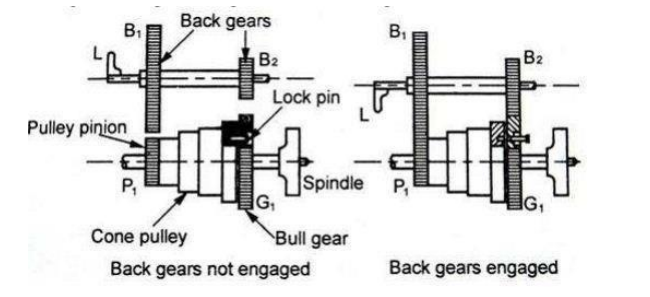
Figure 8: Black Gear Mechanism
There is one stepped cone pulley in the lathe spindle. This pulley can freely rotate on the spindle. A pinion gear Pl is connected to small end of the cone pulley. Pl will rotate when cone pulley rotates. Bull gear Gl is keyed to lathe spindle such that the spindle will rotate when Gear Gl rotates. Speed changes can be obtained by changing the flat belt on the steps. A bull gear Gl may be locked or unlocked with this cone pulley by a lock pin. There are two back gears Bl and B2 on a back shaft. It is operated by means of hand lever L; back gears Bl and B2 can be engaged or disengaged with Gl and Pl. For getting direct speed, back gear is not engaged. The step cone pulley is locked with the main spindle by using the lock pin. The flat belt is changed for different steps. Thus three or four ranges ofspeed can be obtained directly. For getting slow or indirect speeds, back gear is engaged by lever L and lock pin is disengaged. Now, power will flow from Pl to Bl. Bl to B2 (same shaft), B2 to Gl to spindle. As gear Bl is larger than Pl, the speed will further be reduced at Bl. Bl and B2 will have the same speeds. The speed will further be reduced at Gl because gear Gl is larger than B2. So, the speed of spindle is reduced by engaging the back gear.
3. Tumbler Gear Mechanism
Tumbler gear mechanism is used to change the direction of lead screw and feed rod. By changing tumbler gear, the carriage can be moved automatically from tailstock end toheadstock end or moved from head stock end to tailstock end. Usually during thread cutting and automatic feed, tumbler gear is used.